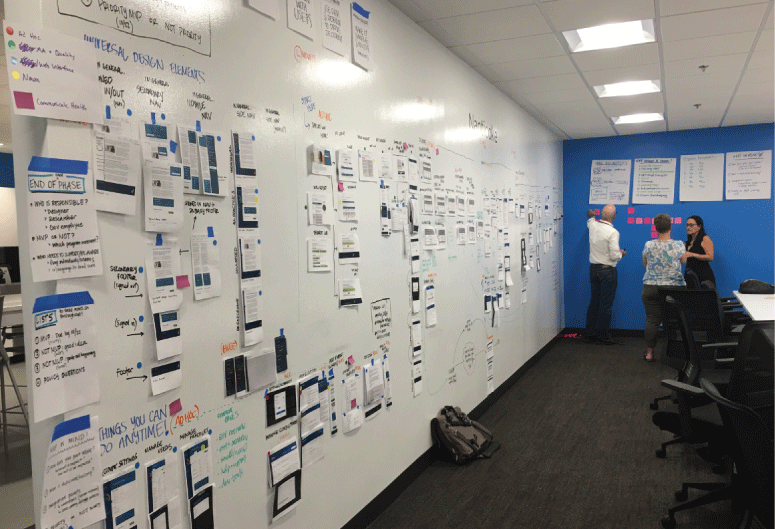
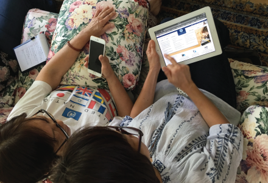
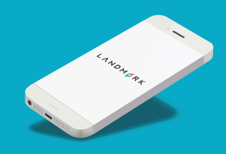
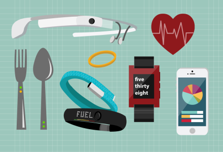
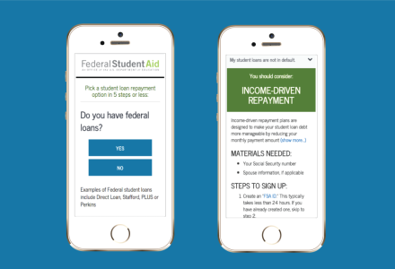

01.
About
02.
Work
03.
Blog
Stephanie Nguyen
Product Design + UX/UI Design + Research

Quality Payment Program
Incentivizing quality of care over volume and reducing clinician burden

Immigrant Visa Modernization
Providing more clarity and feedback in the visa process to potential immigrants

Landmark: image-based navigation
"Head toward the Krispy Kreme and in 4 blocks take a right at Filter coffee shop."

Wearable technology applications
Designing for new ways of information consumption and sharing

Student loan repayment tool
Helping borrowers easily navigate the complexity of student loan repayment options
Visual Designs + Illustrations
Gathering a collection of my favorite visual design pieces
Copyright © Stephanie Nguyen
Twitter
Instagram
LinkedIn